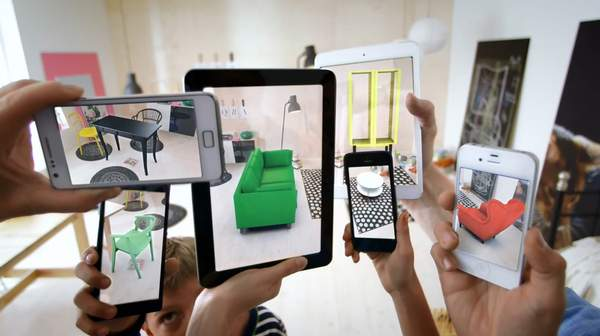

Qu'est-ce que la réalité mixte
Les acronymes AR et VR ont été lancés dans de nombreuses conversations dans l'industrie de la technologie depuis quelques années, et vous pouvez ou non savoir ce qu'ils représentent ou le pouvoir que ils auront sur la façon dont nous interagissons avec les appareils personnels et le monde. Réalité augmentée (RA) est une technologie qui combine la réalité virtuelle, un monde virtuel qui crée un environnement réaliste pour les utilisateurs et les joueurs d'interagir avec, avec le monde réel sous la forme d'images vidéo en direct qui sont numériquement amélioré avec des graphiques. Applications de réalité augmentée actuelles dans le commerce électronique, permettre aux utilisateurs de voir ce que les meubles d'un détaillant feront ressemblent à dans leur chambre et dans les jeux permettent aux utilisateurs d'interagir avec leur environnement avec des caractères qui apparaissent à travers l'appareil photo à l'aide de l'intégration GPS. Comme IKEA par exemple qui a lancé une nouvelle application de réalité augmentée qui permet aux utilisateurs de tester leurs produits dans le confort de leur foyer.

Lors de la conception d'une application utilisant la réalité augmentée,
Things Entertainment suggère des consignes d'accessibilité pour garder à l'esprit les utilisateurs ayant un handicap physique:
- Effets sonores spatiaux ou positionnels: créer des sons qui imitent l'emplacement des objets augmentés permettent les utilisateurs à mobilité réduite pour localiser des objets sans nécessiter de mouvement.
- Emplacement ajustable des objets de réalité augmentée: permettant aux utilisateurs de déplacer l'objet augmenté qu'ils sont requis pour interagir empêche les utilisateurs d'exiger des mouvements tels que l'atteinte, se pencher ou accéder aux zones réservées aux utilisateurs de fauteuils roulants.
- Évitez les conflits spatiaux: permettant aux objets augmentés d'être des formes non fixées, augmentez les options dans le type de mouvement, l'angle de mouvement et la direction du mouvement nécessaire pour l'interaction.
Exemple de cas d'utilisation
Il existe un potentiel pour les personnes ayant une déficience visuelle particulière,
comme la maladie de Stargardt (une réduction de la vision centrale détaillée)
pour voir les images plus clairement en utilisant la VR. Cette vidéo montre comment une femme a pu
d'utiliser l'aide augmentée VR de près pour voir son petit-enfant plus clairement, après huit ans avec une vision limitée.